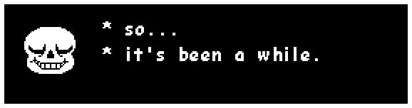
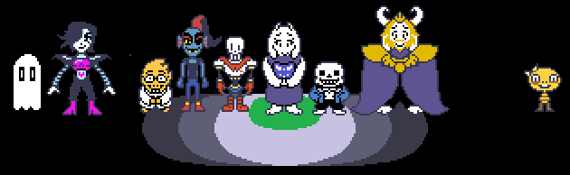

Jogo: Undertale
Desenvolvedor: Tobyfox
Lançamento: 15/set./2015
Catecorias: RPG; Fantasia
My Score: ⭐⭐⭐⭐⭐
Minha música preferida na obra :3
Sobre o Jogo
“UNDERTALE! O jogo de RPG onde você não precisa destruir ninguém.” Essa é a descrição dessa obra de arte, mas como é minha página vou falar com minhas palavras rs. Undertale é um jogo indie repleto de fantasia, amizades, dramas e sentimentos, o jogo te coloca em um contexto em que você é uma criança que ao se aventurar nas montanhas, caiu em um buraco profundo que deu entrada ao mundo subterrâneo dos “monstros”. A partir disso, você trilha sua própria história dentro desse vasto mundo, fazendo amigos, ou não, rindo e presenciando momentos tristes e profundos.
Durante o jogo você descobre vários relatos e escrituras que revelam a história dos monstros e humanos, a grande guerra e aconteceu, e seu desfecho. Isso tudo com uma pixelart incrível e trilhas sonoras impecáveis, algumas escuto hoje em dia e nos primeiros segundos já me emociono com as lembranças, o que é impressionante visto que muitas das músicas se não todas, assim como várias artes, foram feitas apenas pelo criador do jogo, Tobyfox.
Undertale disponibiliza para o jogador 3 finais diferentes, cada um com seu requisito para ocorrer, vou apresentar e ensinar como fazer todos os 3 a seguir ...

Final Neutro
Essa é a rota mais fácil de se fazer, o único critério para fazê-la é não seguir nenhuma outra rota, ou seja, não fazer amizade com ninguém, e nem matar o suficiente para ativar a rota genocida. Curiosidade: No final neutro, o Sans liga para o protagonista contando o que aconteceu depois do final, e o diálogo dele muda dependendo das suas ações durante o jogo.
Final Verdadeiro Pacifista
Esta rota consiste em fazer amizade com todos e não matar nenhum monstro. Esta rota pode ser considerada "o final verdadeiro" para Undertale, levando a uma conclusão feliz e os créditos completos. Para fazer essa rota você precisa completar a rota neutra pelo menos uma vez, você pode carregar o save depois de completar a rota neutra sem resetá-lo e concluir os requisitos que faltaram para a rota pacifista, se você já tiver completado a rota neutra e resetado o save, pode apenas prosseguir normalmente e fazer os requisitos da rota pacifista.
Requisitos para a rota pacifista:
- Não matar nenhum monstro (o dummy nas ruínas não conta como monstro). use sempre meios não letais de terminar as batalhas (poupar, fugir ou ações que terminam a batalha). Se você matar um monstro sem querer, pode recarregar o save e prosseguir normalmente.
- Depois de lutar contra Papyrus, visite a casa dele e conclua o encontro com ele.
- Depois de Undyne desmaiar perseguindo o protagonista, pegue um copo de água do bebedouro mais próximo e derrame nela.
- Retorne para Waterfall e vá para a casa da Undyne. Papyrus estará esperando do lado de fora, fale com ele para entrar na casa e complete o encontro com a Undyne.
- Depois de completar o Core e batalhar contra o Mettaton EX, volte para fora do Core em direção ao MTT Resort, para a ponte que liga os dois lugares. Lá, Undyne chama o protagonista, pedindo para entregar uma carta para ela, fale com Undyne, que estará do lado de fora da casa de Papyrus para receber a Carta de Undyne, coloque a carta sob a porta do laboratório da Alphys e complete o "encontro" com ela.
- Depois disso o Papyrus liga para o protagonista pedindo-o para ir até o laboratório da Alphys, então você poderá entrar no Laboratório Verdadeiro. Depois de completar o Laboratório verdadeiro você vai para a New Home, depois disso é só prosseguir normalmente.
Curiosidades:
- Depois de matar o chefe final, você pode andar pelo mapa todo e conversar com os monstros
- Existem 2 cenas pós créditos para esse final, dependendo da escolha do protagonista
Final Pacifista pós-Genocida: Caso você tenha completado uma rota genocida, todas as vezes que você terminar uma rota pacifista, as cenas pós-créditos serão alteradas.
Final Genocida
A Rota Genocida ocorre quando o protagonista mata TODOS os monstros de cada área: Ruínas/Ruins; Nevada/Snowdin; Cachoeira/Watterfall; Terraquente/Hotland. O Núcleo/Core é considerado uma subárea de Hotland. A rota pode ser feita sem rotas anteriores. Uma vez em que a rota é concluída, finais de Rotas Pacifistas subsequentes serão alteradas, mesmo depois de um True Reset.
Lista de mortes para cada região:
- Ruínas: 20 monstros (Toriel)
- Snowdin: 16 monstros (Papyrus)
- Waterfall: 18 monstros (Undyne the Undying)
- Hotland: 40 montros (Mettaton NEO)
- New Home: Nenhum monstro (Sans).
Orientações:
- Você pode poupar os monstros, contanto que mate o número necessário em cada área (Snowdrake é uma exceção). Isso pode ser usado para evitar certas lutas, como o Jerry.
- Bosses secretos como Glyde e So Sorry não são obrigatórios.
- Se alguns eventos são ativados antes de matar todos os monstros da área, o protagonista será automaticamente mandado para uma Rota Neutra. Por exemplo, se a batalha de Papyrus é ativada antes de esgotar o contador de mortos de Snowdin, a cutscene irá proceder como se estivesse na Rota Neutra.
- Se o protagonista para de cumprir os requisitos para uma Rota Genocida a qualquer momento, ela irá se reverter para uma Rota Neutra.
- Os monstros só aparecem para lutar enquanto o protagonista está em movimento.
- Em algumas salas não aparecem monstros.
- O jeito mais fácil de matar todos os monstros é ir em uma sala em que os monstros apareçam e segurar os botões de andar para cima e para baixo ao mesmo tempo, assim o personagem fica andando infinitamente.

Minha visão
Para mim Undertale foi um dos jogos que mais me marcou, o carisma de cada personagem, as trilhas sonoras, a pixel art, o jeito que o jogo te força a tomar decisões muitas vezes difíceis, tudo isso me fez criar um carinho enorme pelo jogo. Com isso, acabei dando pra vocês um curto guia de finais e uma visão por cima sobre o jogo, pois pra saber como realmente é, apenas jogando e tendo sua própria experiencia, recomendo demais que você jogue essa obra, tenho certeza que vai te marcar assim como me marcou.